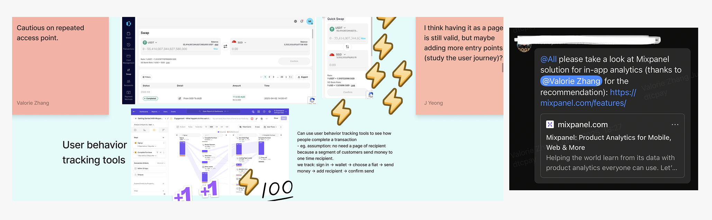

Our website was revamped a year ago, but we still receive customer feedback about usability issues. While individual pain points have been addressed with quick fixes, the lack of systematic insights prompted us to take a more holistic approach to improving the overall experience.
As the designer working on the web day-to-day, I noticed recurring questions and opportunities for improvement. Instead of listing quick fixes and having a reactive discussion around isolated tweaks, I aimed to spark a more meaningful, forward-looking conversation. Believing that specifically for our website, improving user experience requires systemic change—not just surface-level fixes-I organized a collaborative workshop to present issues and ideas grouped by theme, encourage open discussion, and align on priorities through voting to define clear next steps.
The workshop led to alignment on focus areas for the next web revamp, with reworking the information architecture identified as the top priority. To redesign it effectively, we first need a clear understanding of the user journey and user needs.
Given the company’s limited design culture and concerns about the time investment for user interviews, I proposed alternative approaches. I highlighted how lightweight tracking tools like Mixpanel can offer real-time user feedback, helping us identify blockers and make more informed, data-driven decisions.
